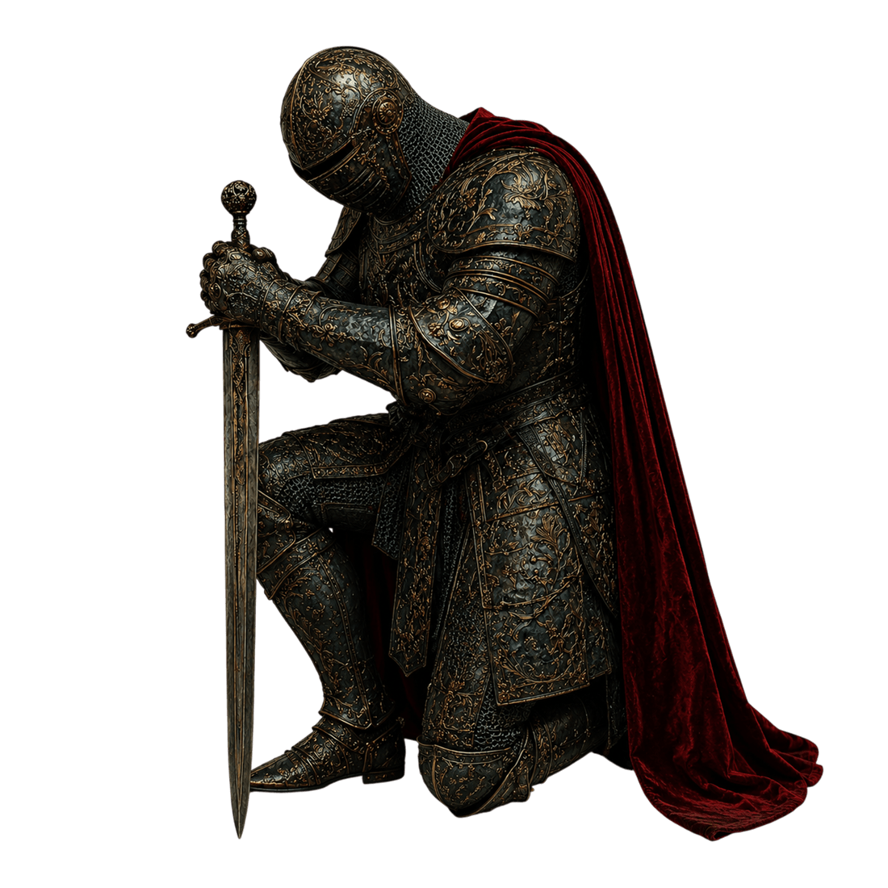

Exercício Prático
Pilar I
A Estrutura
do Homem
A fundação que sustenta tudo o que você construirá
Antes de tentar construir um relacionamento forte,
você precisa construir a si mesmo.
 Pilar I — A Estrutura do Homem
Pilar I — A Estrutura do Homem
Antes de tentar construir um relacionamento forte, você precisa construir a si mesmo. Esse é o principal objetivo do primeiro pilar do MHRP. Muitos homens tentam encontrar a mulher certa sem perceber que ainda não se tornaram o homem capaz de sustentar aquilo que desejam construir.
Os exercícios abaixo não foram criados para serem respondidos rapidamente apenas para "finalizar" o pilar. Eles existem para gerar consciência, direção e mudança prática na sua vida. Por isso, é extremamente importante que você tenha um caderno próprio para realizar todos os exercícios do manual. Anote suas respostas, acompanhe sua evolução e seja completamente sincero consigo mesmo durante esse processo.
Não tente acelerar esse processo. O ideal é que você permaneça pelo menos duas semanas exercitando esse primeiro pilar antes de avançar para o próximo.
Você deve ser uma pessoa equilibrada para prover segurança para a pessoa que está do seu lado.
"Sou uma pessoa ansiosa."
"Sou impulsivo."
"Reajo sem pensar."
"Desconto frustrações em outras pessoas."
Seja completamente sincero sobre aquilo que você precisa melhorar para conseguir construir um relacionamento saudável, estável e seguro, tanto para a pessoa que já está ao seu lado quanto para a pessoa que um dia estará.
Dica Prática
Quando algo te incomodar, não reaja imediatamente. Pare por alguns minutos, respire, se acalme e tente responder de forma racional.
Pilar I — A Estrutura do Homem
Depois de responder, defina uma ação prática para realizar nos próximos 7 dias, mesmo que seja apenas um primeiro passo.
Muitas vezes o homem sabe exatamente o que precisa fazer, mas permanece parado por medo, insegurança ou procrastinação. Liderança também significa capacidade de tomar decisões difíceis.
Dica Prática
Vá para um lugar em que você consiga se conectar consigo mesmo. Um parque, um ambiente silencioso ou qualquer lugar em que você consiga pensar com clareza.
Escolha um hábito que você acredita que precisa melhorar na sua vida. Você precisa identificar quais hábitos faltam na sua rotina e quais deles poderiam transformar sua construção individual se fossem praticados constantemente.
A meta é que você tente praticar esse hábito durante 7 dias seguidos.
Dica Prática
Não escolha metas irreais ou extremamente difíceis logo no começo. Pequenas vitórias constantes constroem muito mais disciplina do que grandes metas impossíveis de sustentar.
Pilar I — A Estrutura do Homem
Fazer um curso.
Buscar uma profissionalização.
Atualizar currículo.
Entregar currículos.
Começar um projeto.
Aprender uma nova habilidade.
Pense honestamente sobre sua vida profissional e financeira. Reflita sobre quais movimentos poderiam começar a mudar sua direção atual se fossem colocados em prática imediatamente.
Conclusão
A maioria dos homens tenta mudar de vida apenas quando tudo já começou a desmoronar. Mas construção verdadeira normalmente começa em silêncio, por meio de pequenas decisões repetidas diariamente.
Se você fizer esses exercícios com sinceridade, já começou a fortalecer pilares que impactarão não apenas seus relacionamentos, mas toda a sua vida.
Construa-se até realmente se tornar um.